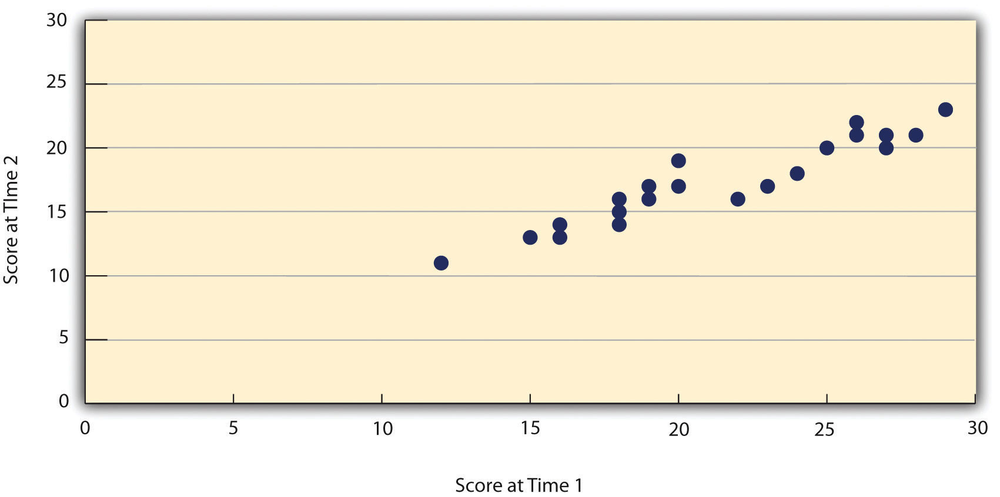
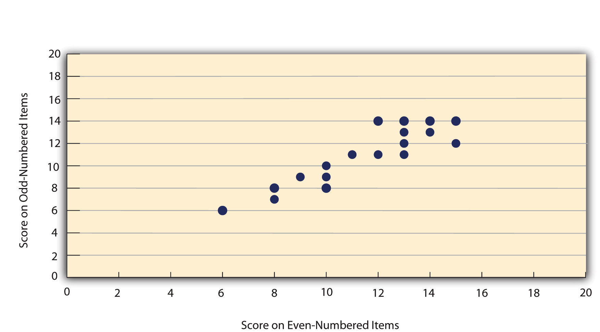

Again, measurement involves assigning scores to individuals so that they represent some characteristic of the individuals. But how do researchers know that the scores actually represent the characteristic, especially when it is a construct like intelligence, self-esteem, depression, or working memory capacity? The answer is that they conduct research using the measure to confirm that the scores make sense based on their understanding of the construct being measured. This is an extremely important point. Psychologists do not simply assume that their measures work. Instead, they collect data to demonstrate that they work. If their research does not demonstrate that a measure works, they stop using it.
As an informal example, imagine that you have been dieting for a month. Your clothes seem to be fitting more loosely, and several friends have asked if you have lost weight. If at this point your bathroom scale indicated that you had lost 10 pounds, this would make sense and you would continue to use the scale. But if it indicated that you had gained 10 pounds, you would rightly conclude that it was broken and either fix it or get rid of it. In evaluating a measurement method, psychologists consider two general dimensions: reliability and validity.
ReliabilityThe extent to which the scores on a measure are consistent across time, across multiple items on the same measure, and across researchers when a measure has an element of subjective judgment. refers to the consistency of a measure. Psychologists consider three types of consistency: over time (test-retest reliability), across items (internal consistency), and across different researchers (interrater reliability).
When researchers measure a construct that they assume to be consistent across time, then the scores they obtain should also be consistent across time. Test-retest reliabilityThe extent to which scores on a measure are consistent across time for the same individuals. is the extent to which this is actually the case. For example, intelligence is generally thought to be consistent across time. A person who is highly intelligent today will be highly intelligent next week. This means that any good measure of intelligence should produce roughly the same scores for this individual next week as it does today. Clearly, a measure that produces highly inconsistent scores over time cannot be a very good measure of a construct that is supposed to be consistent.
Assessing test-retest reliability requires using the measure on a group of people at one time, using it again on the same group of people at a later time, and then looking at test-retest correlationThe correlation between individuals’ scores on a measure used at two different times. between the two sets of scores. This is typically done by graphing the data in a scatterplot and computing Pearson’s r. Figure 5.3 "Test-Retest Correlation Between Two Sets of Scores of Several College Students on the Rosenberg Self-Esteem Scale, Given Two Times a Week Apart" shows the correlation between two sets of scores of several college students on the Rosenberg Self-Esteem Scale, given two times a week apart. Pearson’s r for these data is +.95. In general, a test-retest correlation of +.80 or greater is considered to indicate good reliability.
Figure 5.3 Test-Retest Correlation Between Two Sets of Scores of Several College Students on the Rosenberg Self-Esteem Scale, Given Two Times a Week Apart
Again, high test-retest correlations make sense when the construct being measured is assumed to be consistent over time, which is the case for intelligence, self-esteem, and the Big Five personality dimensions. But other constructs are not assumed to be stable over time. The very nature of mood, for example, is that it changes. So a measure of mood that produced a low test-retest correlation over a period of a month would not be a cause for concern.
A second kind of reliability is internal consistencyThe extent to which the items on a multiple-item measure are consistent with each other., which is the consistency of people’s responses across the items on a multiple-item measure. In general, all the items on such measures are supposed to reflect the same underlying construct, so people’s scores on those items should be correlated with each other. On the Rosenberg Self-Esteem Scale, people who agree that they are a person of worth should tend to agree that that they have a number of good qualities. If people’s responses to the different items are not correlated with each other, then it would no longer make sense to claim that they are all measuring the same underlying construct. This is as true for behavioral and physiological measures as for self-report measures. For example, people might make a series of bets in a simulated game of roulette as a measure of their level of risk seeking. This measure would be internally consistent to the extent that individual participants’ bets were consistently high or low across trials.
Like test-retest reliability, internal consistency can only be assessed by collecting and analyzing data. One approach is to look at a split-half correlationThe correlation between scores based on one half of the items on a multiple-item measure and scores based on the other half of the items.. This involves splitting the items into two sets, such as the first and second halves of the items or the even- and odd-numbered items. Then a score is computed for each set of items, and the relationship between the two sets of scores is examined. For example, Figure 5.4 "Split-Half Correlation Between Several College Students’ Scores on the Even-Numbered Items and Their Scores on the Odd-Numbered Items of the Rosenberg Self-Esteem Scale" shows the split-half correlation between several college students’ scores on the even-numbered items and their scores on the odd-numbered items of the Rosenberg Self-Esteem Scale. Pearson’s r for these data is +.88. A split-half correlation of +.80 or greater is generally considered good internal consistency.
Figure 5.4 Split-Half Correlation Between Several College Students’ Scores on the Even-Numbered Items and Their Scores on the Odd-Numbered Items of the Rosenberg Self-Esteem Scale
Perhaps the most common measure of internal consistency used by researchers in psychology is a statistic called Cronbach’s αA statistic used to assess the internal consistency of a multiple-item measure. It is conceptually equivalent to the mean of all possible split-half correlations. (the Greek letter alpha). Conceptually, α is the mean of all possible split-half correlations for a set of items. For example, there are 252 ways to split a set of 10 items into two sets of five. Cronbach’s α would be the mean of the 252 split-half correlations. Note that this is not how α is actually computed, but it is a correct way of interpreting the meaning of this statistic. Again, a value of +.80 or greater is generally taken to indicate good internal consistency.
Many behavioral measures involve significant judgment on the part of an observer or a rater. Interrater reliabilityWhen a measure involves human judgment, the extent to which different observers are consistent in their judgments. is the extent to which different observers are consistent in their judgments. For example, if you were interested in measuring college students’ social skills, you could make video recordings of them as they interacted with another student whom they are meeting for the first time. Then you could have two or more observers watch the videos and rate each student’s level of social skills. To the extent that each participant does in fact have some level of social skills that can be detected by an attentive observer, different observers’ ratings should be highly correlated with each other. If they were not, then those ratings could not be an accurate representation of participants’ social skills. Interrater reliability is often assessed using Cronbach’s α when the judgments are quantitative or an analogous statistic called Cohen’s κA statistic used to assess interrater reliability when the observer judgments are categorical. (the Greek letter kappa) when they are categorical.
ValidityThe extent to which scores on a measure represent the variable or construct they are intended to. Validity is a judgment based on the available evidence. is the extent to which the scores from a measure represent the variable they are intended to. But how do researchers make this judgment? We have already considered one factor that they take into account—reliability. When a measure has good test-retest reliability and internal consistency, researchers should be more confident that the scores represent what they are supposed to. There has to be more to it, however, because a measure can be extremely reliable but have no validity whatsoever. As an absurd example, imagine someone who believes that people’s index finger length reflects their self-esteem and therefore tries to measure self-esteem by holding a ruler up to people’s index fingers. Although this measure would have extremely good test-retest reliability, it would have absolutely no validity. The fact that one person’s index finger is a centimeter longer than another’s would indicate nothing about which one had higher self-esteem.
Textbook presentations of validity usually divide it into several distinct “types.” But a good way to interpret these types is that they are other kinds of evidence—in addition to reliability—that should be taken into account when judging the validity of a measure. Here we consider four basic kinds: face validity, content validity, criterion validity, and discriminant validity.
Face validityThe extent to which a measure appears “on its face” to measure the variable or construct it is supposed to. is the extent to which a measurement method appears “on its face” to measure the construct of interest. Most people would expect a self-esteem questionnaire to include items about whether they see themselves as a person of worth and whether they think they have good qualities. So a questionnaire that included these kinds of items would have good face validity. The finger-length method of measuring self-esteem, on the other hand, seems to have nothing to do with self-esteem and therefore has poor face validity. Although face validity can be assessed quantitatively—for example, by having a large sample of people rate a measure in terms of whether it appears to measure what it is intended to—it is usually assessed informally.
Face validity is at best a very weak kind of evidence that a measurement method is measuring what it is supposed to. One reason is that it is based on people’s intuitions about human behavior, which are frequently wrong. It is also the case that many established measures in psychology work quite well despite lacking face validity. The Minnesota Multiphasic Personality Inventory (MMPI) measures many personality characteristics and disorders by having people decide whether each of over 567 different statements applies to them—where many of the statements do not have any obvious relationship to the construct that they measure. Another example is the Implicit Association Test, which measures prejudice in a way that is nonintuitive to most people (see Note 5.31 "How Prejudiced Are You?").
The Implicit Association Test (IAT) is used to measure people’s attitudes toward various social groups. The IAT is a behavioral measure designed to reveal negative attitudes that people might not admit to on a self-report measure. It focuses on how quickly people are able to categorize words and images representing two contrasting groups (e.g., gay and straight) along with other positive and negative stimuli (e.g., the words “wonderful” or “nasty”). The IAT has been used in dozens of published research studies, and there is strong evidence for both its reliability and its validity (Nosek, Greenwald, & Banaji, 2006).Nosek, B. A., Greenwald, A. G., & Banaji, M. R. (2006). The Implicit Association Test at age 7: A methodological and conceptual review. In J. A. Bargh (Ed.), Social psychology and the unconscious: The automaticity of higher mental processes (pp. 265–292). London, England: Psychology Press. You can learn more about the IAT—and take several of them for yourself—at the following website: https://implicit.harvard.edu/implicit.
Content validityThe extent to which a measure covers all aspects of the construct it is supposed to measure. is the extent to which a measure “covers” the construct of interest. For example, if a researcher conceptually defines test anxiety as involving both sympathetic nervous system activation (leading to nervous feelings) and negative thoughts, then his measure of test anxiety should include items about both nervous feelings and negative thoughts. Or consider that attitudes are usually defined as involving thoughts, feelings, and actions toward something. By this conceptual definition, a person has a positive attitude toward exercise to the extent that he or she thinks positive thoughts about exercising, feels good about exercising, and actually exercises. So to have good content validity, a measure of people’s attitudes toward exercise would have to reflect all three of these aspects. Like face validity, content validity is not usually assessed quantitatively. Instead, it is assessed by carefully checking the measurement method against the conceptual definition of the construct.
Criterion validityThe extent to which scores on a measure are correlated with other variables and constructs that they are expected to be correlated with, given the conceptual definition of the construct being measured. is the extent to which people’s scores on a measure are correlated with other variables (known as criteriaA variable or construct expected to be correlated with scores on a measure that is being evaluated. The plural is criteria.) that one would expect them to be correlated with. For example, people’s scores on a new measure of test anxiety should be negatively correlated with their performance on an important school exam. If it were found that people’s scores were in fact negatively correlated with their exam performance, then this would be a piece of evidence that these scores really represent people’s test anxiety. But if it were found that people scored equally well on the exam regardless of their test anxiety scores, then this would cast doubt on the validity of the measure.
A criterion can be any variable that one has reason to think should be correlated with the construct being measured, and there will usually be many of them. For example, one would expect test anxiety scores to be negatively correlated with exam performance and course grades and positively correlated with general anxiety and with blood pressure during an exam. Or imagine that a researcher develops a new measure of physical risk taking. People’s scores on this measure should be correlated with their participation in “extreme” activities such as snowboarding and rock climbing, the number of speeding tickets they have received, and even the number of broken bones they have had over the years. Criteria can also include other measures of the same construct. For example, one would expect new measures of test anxiety or physical risk taking to be positively correlated with existing measures of the same constructs. So the use of converging operations is one way to examine criterion validity.
Assessing criterion validity requires collecting data using the measure. Researchers John Cacioppo and Richard Petty did this when they created their self-report Need for Cognition Scale to measure how much people value and engage in thinking (Cacioppo & Petty, 1982).Cacioppo, J. T., & Petty, R. E. (1982). The need for cognition. Journal of Personality and Social Psychology, 42, 116–131. In a series of studies, they showed that college faculty scored higher than assembly-line workers, that people’s scores were positively correlated with their scores on a standardized academic achievement test, and that their scores were negatively correlated with their scores on a measure of dogmatism (which represents a tendency toward obedience). In the years since it was created, the Need for Cognition Scale has been used in literally hundreds of studies and has been shown to be correlated with a wide variety of other variables, including the effectiveness of an advertisement, interest in politics, and juror decisions (Petty, Briñol, Loersch, & McCaslin, 2009).Petty, R. E, Briñol, P., Loersch, C., & McCaslin, M. J. (2009). The need for cognition. In M. R. Leary & R. H. Hoyle (Eds.), Handbook of individual differences in social behavior (pp. 318–329). New York, NY: Guilford Press.
Discriminant validityThe extent to which scores on a measure are not correlated with other variables and constructs that are conceptually distinct. is the extent to which scores on a measure are not correlated with measures of variables that are conceptually distinct. For example, self-esteem is a general attitude toward the self that is fairly stable over time. It is not the same as mood, which is how good or bad one happens to be feeling right now. So people’s scores on a new measure of self-esteem should not be very highly correlated with their moods. If the new measure of self-esteem were highly correlated with a measure of mood, it could be argued that the new measure is not really measuring self-esteem; it is measuring mood instead.
When they created the Need for Cognition Scale, Cacioppo and Petty also provided evidence of discriminant validity by showing that people’s scores were not correlated with certain other variables. For example, they found only a weak correlation between people’s need for cognition and a measure of their cognitive style—the extent to which they tend to think analytically by breaking ideas into smaller parts or holistically in terms of “the big picture.” They also found no correlation between people’s need for cognition and measures of their test anxiety and their tendency to respond in socially desirable ways. All these low correlations provide evidence that the measure is reflecting a conceptually distinct construct.